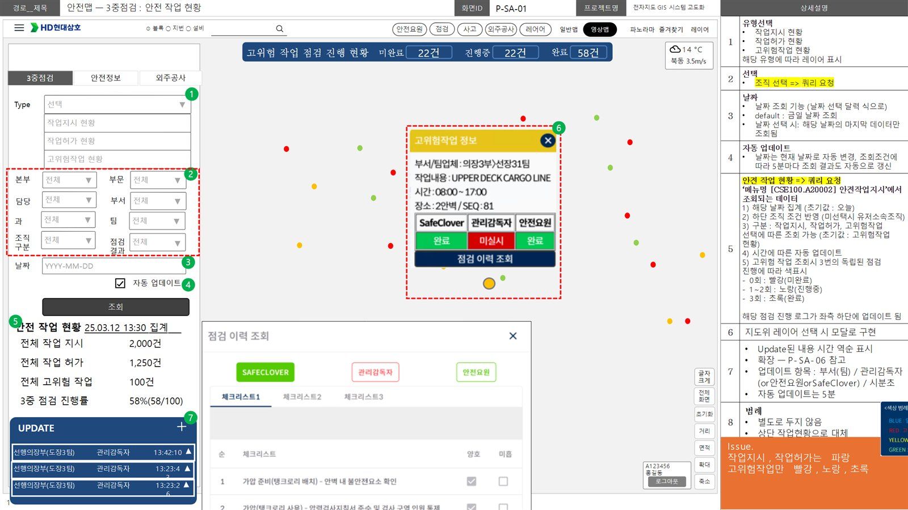
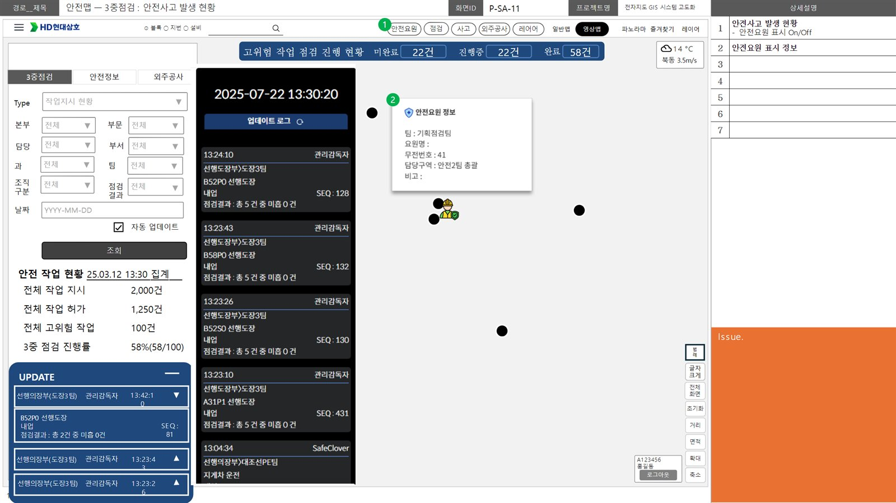
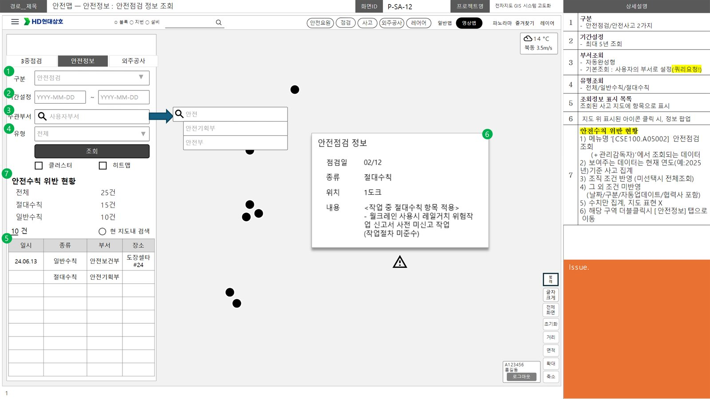
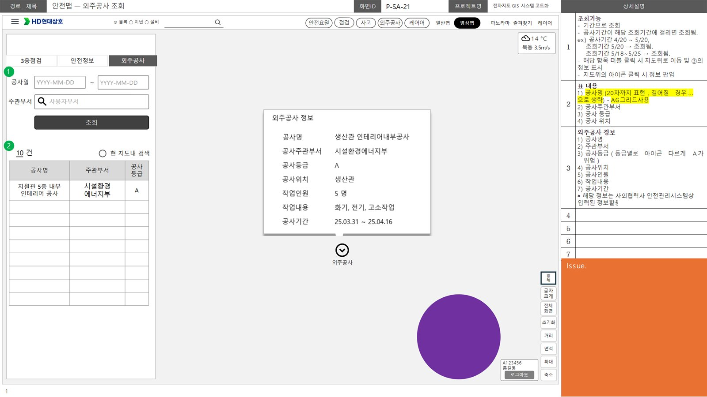
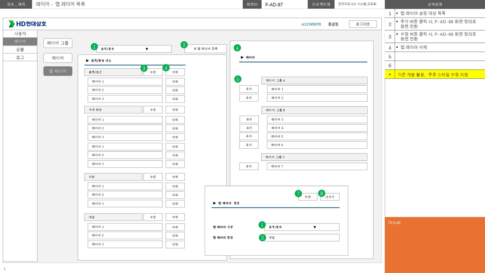
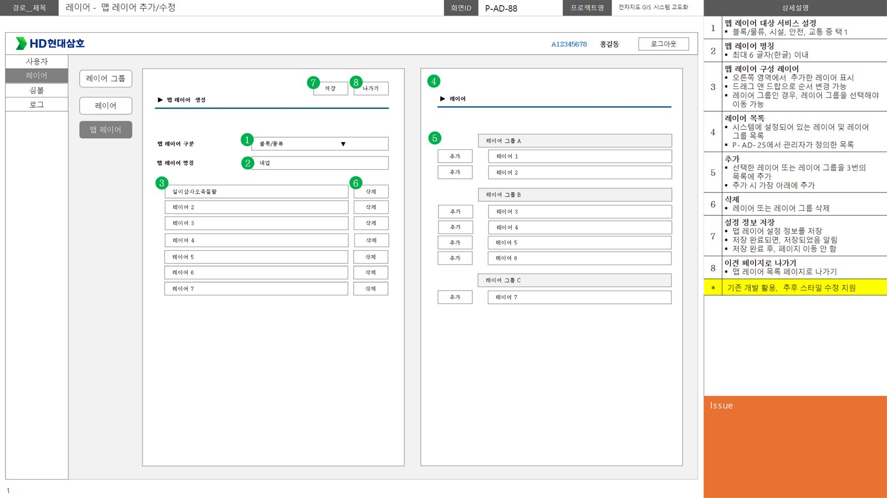
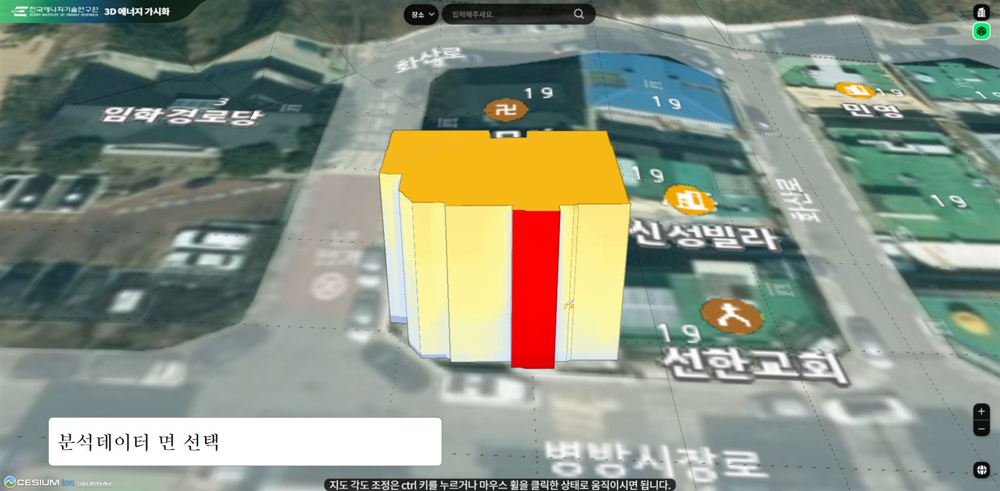

Forest Watershed Map
A Web GIS spatial-analysis flow that non-experts can follow — complex analysis turned into step-by-step choices.


Shipyard safety, defined feature by feature
An upgrade of HD Hyundai Samho’s electronic-map GIS system. I planned the Safety Map service and the admin features that organize map groups and layers — turning requirements into user actions and system functions, then carrying them through functional specs and screen designs into a structure developers could build.
View Screens1-1. Background
The shipyard’s GIS splits its maps by line of work: block & logistics, facilities, safety, traffic and mobile. My part was the Safety Map, used by the safety planning team, and the admin features that decide which spatial layers each map shows.
HOW I FRAMED THE WORK
I broke each requirement down into user actions and system functions, then turned them into a service structure developers could build through the functional spec and the screen design spec.
2-1. Spatial Data Structure
Before drawing screens, I organized how spatial data is managed: each work area has its own map groups, a group is registered by choosing its work area and a name, and each group holds the sub-layers that appear on that map.
Spatial data management structure
Concept diagram reconstructed from the features discussed in the project.
2-2. Requirements → Functions
For each feature I specified what the user does, what the system does in response, and which inputs and buttons are involved — so the same definition could drive both the functional spec and the screens.
Pick the work area — block & logistics, facilities, safety, traffic — enter a group name and save.
View the registered map layers, then edit or delete existing ones.
Add layers or layer groups to the selected map group, remove them, and reorder them by drag and drop.
3-1. Safety Map — Triple Inspection
Users choose a status type — work orders, work permits or high-risk work — filter by organization and date, and the list refreshes automatically every five minutes. High-risk work points are colored by how many of the three independent inspections are done: red for none, yellow for one or two, green for all three. Selecting a point opens its details and inspection history.
3-2. Safety Staff & Update Log
Safety staff can be shown or hidden on the map, with a popup for each person’s team, radio number and area. An update log lists the latest inspection results by time, newest first.

3-3. Safety Information
Safety inspections and incidents can be looked up by period (up to five years), department and violation type. Results appear as points on the map and in a list, and can be switched to clusters or a heatmap where denser areas turn red.


3-4. Contract Work
Contract work is searched by period — a job appears if its construction period overlaps the search range. Double-clicking a row moves the map to the site, and each site’s popup shows the job, department, grade, workers, tasks and period.

3-5. Map Layer Management (Admin)
The map layer list groups layers by work area, with add, edit and delete for each map. On the edit screen, admins pick the target service (one of block & logistics, facilities, safety or traffic), name the map layer (up to six Korean characters), add layers or layer groups from the list on the right, and reorder them by drag and drop. Saving keeps the admin on the page and confirms the save.


4-1. Change History
When features or screens changed, I updated the functional spec and the screen design spec together and recorded each revision in the version history.
| Date | My revisions in the screen design spec |
|---|---|
| 2025.03.21 | Safety Map screen design — first draft |
| 2025.04.21 | Block information · process view — first draft |
| 2025.04.25 | Safety Map screen design — revised |
| 2025.09.22 | My location & nearby search, block location, material location |
4-2. Admin Manual
Separately from the features I designed, I wrote the admin manual: how to reach and sign in to the admin pages, the overall layout, what each menu does — layers, symbols, users and logs — and how to view, register, edit and delete. The layer management screen was explained component by component.
Detailing a GIS service into functions, understanding how spatial data is managed in groups and layers, designing screens function by function, and keeping specs and change history in order.
Writing each function as a user action made the functional spec and the screens line up, so every later change could be traced through the version history.
Screens shown are from the planning-stage screen design spec, not the final built service. Personal names and internal addresses have been masked.
A Web GIS spatial-analysis flow that non-experts can follow — complex analysis turned into step-by-step choices.
Web-based 3D software that maps solar radiation onto building walls — from data production to histograms.
